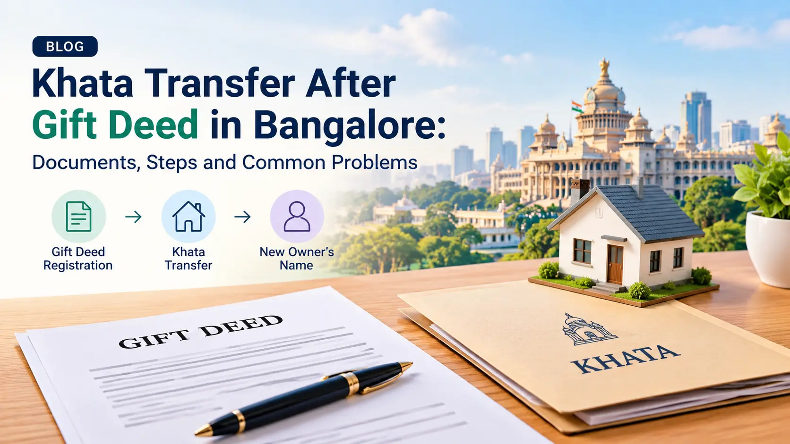

Khata Transfer After Gift Deed in Bangalore: Documents, Steps and Common Problems
To get a khata transfer after a gift deed in Bangalore, first confirm that the gift deed is registered at the Sub-Registrar's office. Then apply for the khata change in your name with the registered deed, the donor's khata, an updated property tax receipt, an encumbrance certificate and your ID proof.
A gift deed moves the ownership of a property from one person to another. It does not change the civic record. After the deed is registered, the khata may still show the donor, and that gap causes real trouble later: you cannot easily pay tax in your name, apply for a plan approval, take a loan or sell. This guide explains how to close that gap, step by step, and where families usually get stuck.
In short: the five steps
- Check that the gift is valid and that a gift deed is the right document.
- Register the gift deed at the Sub-Registrar's office.
- Collect the documents for the khata application, including a fresh encumbrance certificate.
- Apply for the khata change in your name through the online khata system.
- Respond to any verification query, pay the civic charges and download the new khata.
Gift deed and khata: what each one does
Many owners think the gift deed and the khata do the same job. They do not. One transfers ownership; the other records it for the city.
| Feature | Gift deed | Khata |
|---|---|---|
| What it is | A registered legal document in which the donor gives the property to the receiver (the donee), usually without payment | The city's record of who is responsible for the property, used for property tax |
| What it proves | Legal transfer of ownership by gift | That the named person is the recorded owner for tax purposes |
| Where it is done | Sub-Registrar's office | Bengaluru's khata system (online, with ward or zonal office verification) |
| Who acts | The donor, the donee and two witnesses | The person who now owns the property |
| Needed for | Clear title | Property tax, loans, plan approval, sale, utility connections |
If you are new to the topic, our general guide to BBMP khata transfer explains the basics, and our e-Khata guide explains the digital khata.
Step 1: Check that the gift is valid and the deed is the right one
A gift of immovable property works when the donor owns the property and gives it voluntarily, without payment, and the receiver accepts it while the donor is alive. The deed must be registered, signed by the donor and attested by at least two witnesses.
| Situation | Usual document |
|---|---|
| Owner gives property without payment during lifetime | Gift deed |
| A co-owner gives up their share to another co-owner | Release deed |
| Co-owners divide the property into separate portions | Partition deed |
| Property is sold for money | Sale deed |
| Owner wants the transfer to take effect only after death | Will |
Using the wrong document is one of the most common causes of later trouble. Marvel Consultants drafts and reviews sale, gift, release and partition deeds with the records that the Sub-Registrar and, later, the khata office will expect.
Step 2: Register the gift deed
A gift of immovable property must be made by a registered deed. A signed paper without registration usually does not transfer ownership, and it will not be accepted for a khata change. Registration is done at the Sub-Registrar's office. You can read the current process on the official Kaveri Online Services portal.
Step 3: Collect the documents for the khata application
- The registered gift deed (original, plus copies)
- The donor's khata certificate and khata extract
- The latest property tax paid receipt, with no dues pending
- A fresh encumbrance certificate showing the gift deed entry
- The donor's earlier title documents (sale deed, partition deed, will, etc.)
- ID and address proof of the donee (Aadhaar and PAN)
- For an apartment: Occupancy Certificate and builder's documents
Step 4: Check the current khata and tax position
Before you apply, look at what the khata record shows today. Three things matter: whose name it is in, what type of khata it is, and whether any property tax is pending. If the property tax is unpaid, clear it before you apply. Pending dues stop many applications. Our guide to BBMP property tax assessment and payment explains how to check and clear dues.
Step 5: Apply for the khata change
In Bengaluru, khata applications are made through the online khata system. BBMP has been replaced by the Greater Bengaluru Authority and city corporations, so portal names and office names can change. Always confirm the current route on the official portal before you start. If you need help with the digital record, see our e-Khata services.
Step 6: Respond to queries, pay the charges and download the khata
After submission, the application is checked. The officer may raise a query or call for a site check. After approval, the civic charges are paid and the new khata certificate and extract are issued in your name. Download both and keep a copy with your title documents.
Common reasons for delay or rejection
- The gift deed is not registered, or the EC does not show it.
- The donor was not the full owner of what was gifted.
- The wrong document was used (e.g., gift deed instead of release deed).
- Names or property details do not match across documents.
- Property tax is pending in the donor's name.
- The ownership chain is broken.
Frequently asked questions
Do I need a khata transfer after a gift deed?
Yes, in practice you should. The registered gift deed gives you the legal title. The khata is the civic record used for property tax, plan approval, loans and resale. If the khata still shows the donor, you will face problems when you need any of these.
Does the gift deed have to be registered before the khata transfer?
Yes. A gift of immovable property should be made by a registered deed, signed by the donor and attested by at least two witnesses. The khata office relies on the registered deed, and an unregistered paper will not be accepted as proof of ownership.
Can I apply for the khata transfer online?
Yes. Khata applications in Bengaluru are made through the online khata system, and some cases still need document verification or a visit to the ward or zonal office.
Do I pay stamp duty again for the khata transfer?
No. Stamp duty and registration charges are paid at the Sub-Registrar's office when the gift deed is registered. The khata transfer has its own separate civic charges.